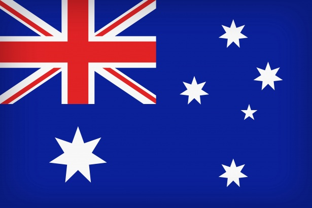
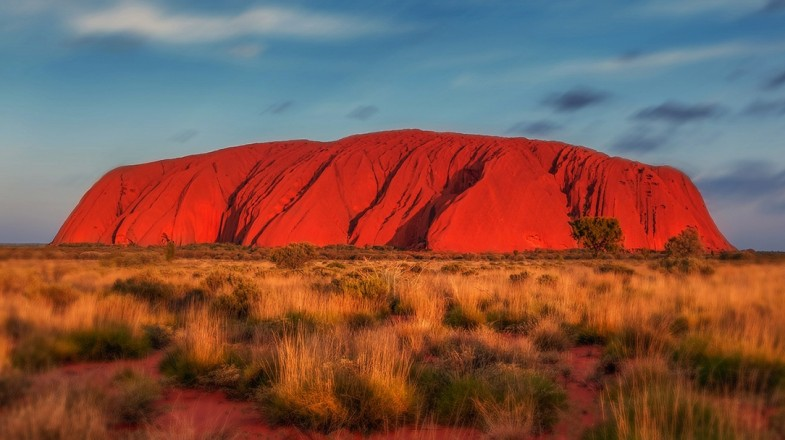
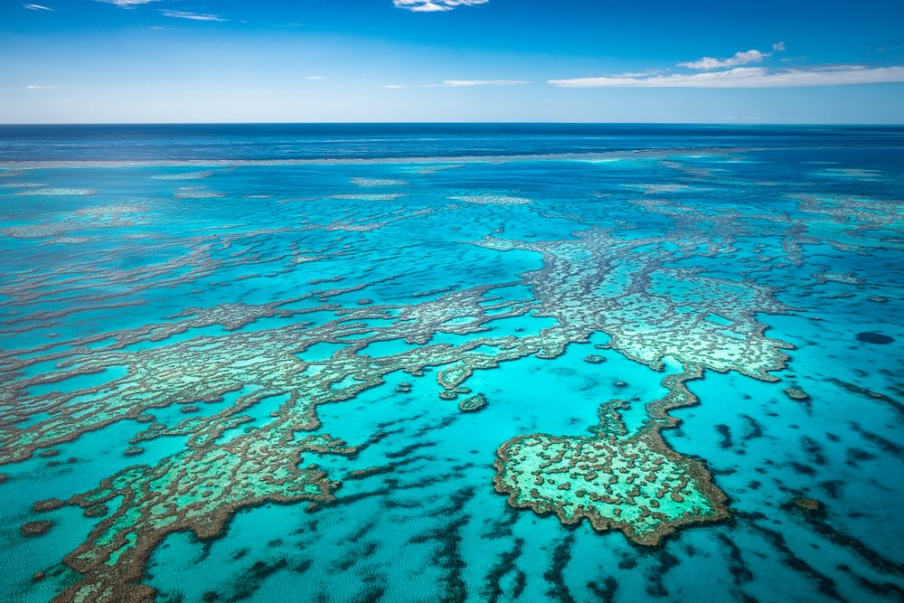
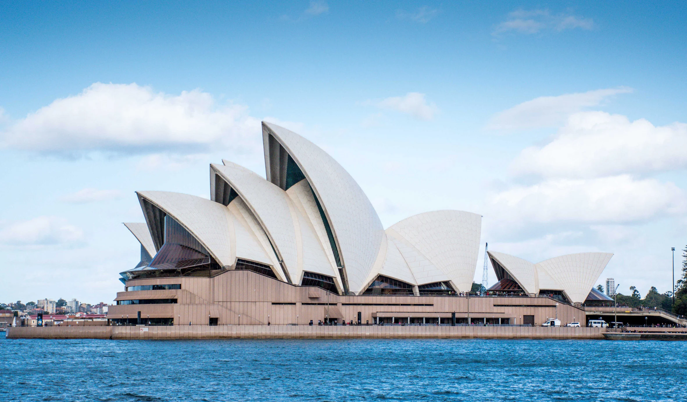
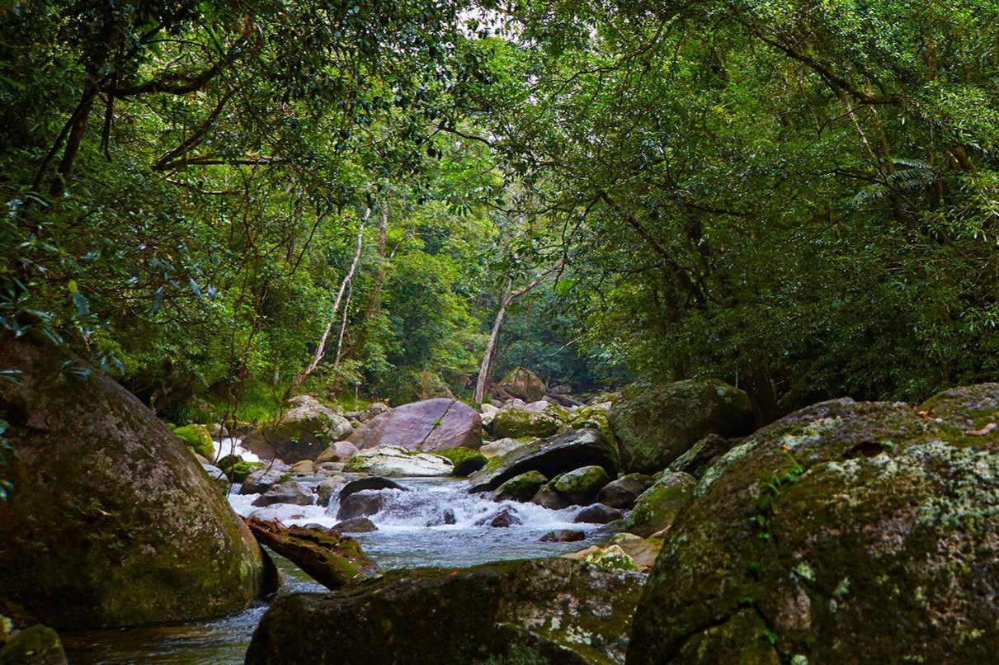
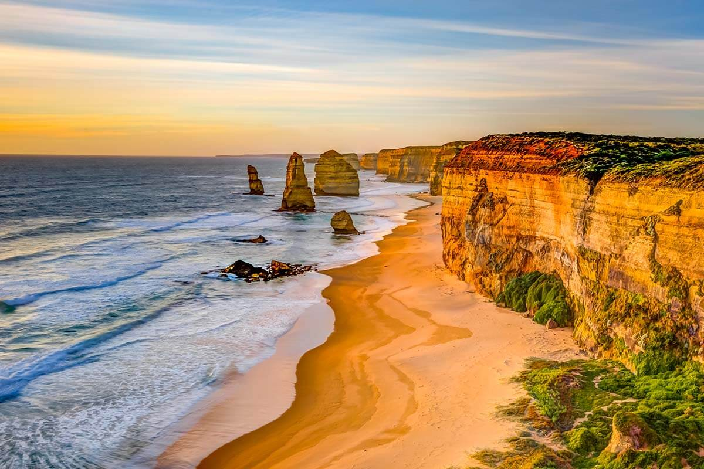
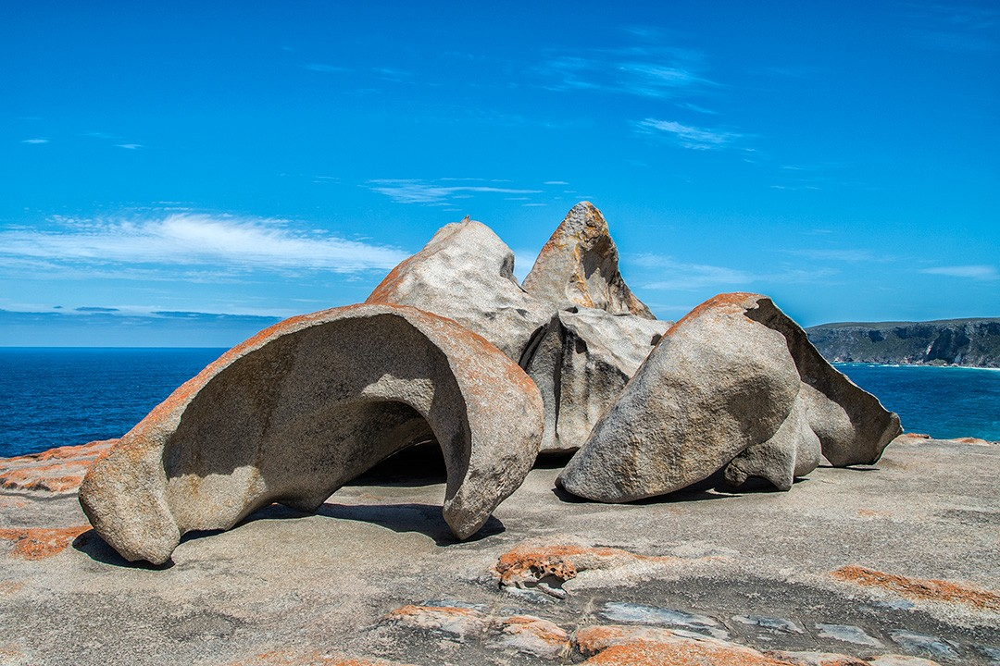

Australia este o țară ce ocupă în întregime continentul cu același nume, insula Tasmania și alte insule mai mici. Este cea de-a șasea țară în lume după mărime și cea mai mare țară din Oceania și Australasia. Australia este cel mai vechi, cel mai plat și cel mai uscat continent locuit, cu cele mai puțin fertile soluri. Este o țară megadiversă, iar dimensiunile sale îi conferă o mare varietate de peisaje și climate, cu deșerturi în centru, păduri tropicale în nord-est și lanțuri muntoase în sud-est.
Fiind o țară foarte dezvoltată și una dintre cele mai bogate, Australia este cea de-a 13-a economie a lumii după mărime și este pe-al zecelea loc după venitul pe cap de locuitor. Fiind pe-al optulea loc după indicele dezvoltării umane, Australia ocupă printre primele locuri în lume după multe alte performanțe precum calitatea vieții, sănătate, educație, libertate economică și protecția drepturilor civile și a celor politice.
DATE GENERALE

Denumirea oficiala: Uniunea Australiei
Fusul orar: UTC+8/+9:30/+10
Capitala: Canberra
Suprafata: 7 617 930 km2
Moneda: dolarul australian
Limba oficiala: engleza
Prefix telefonic international: +61
ATRACTII TURISTICE

Acest parc prezintă formațiuni geologice spectaculoase care domină vasta câmpie nisipoasă roșie din centrul Australiei. Uluru, un monolit imens, și Kata Tjuta, cupolele de stâncă situate la vest de Uluru, fac parte din sistemul tradițional de credințe al uneia dintre cele mai vechi societăți umane din lume.

Marea Barieră de Corali este cea mai mare structură din lume construită doar de organisme vii şi poate fi văzută in largul coastei Queensland. Este cel mai mare sistem de recif de corali din lume, fiind alcătuit din peste 2900 de recife individuale. 900 de insule cu diverse dimensiuni ocupă o suprafaţă de peste 2600 de kilometri. Milioane de organisme mici au compus această minune a naturii. Datorită biodiversităţii sale, apelor călduţe şi accesibilitatea ambarcaţiunilor turistice, Marea Barieră de Corali este o destinaţie de vacanţă foarte populară.

Sydney Opera House, localizată în vârful unui promontoriu ce străjuiește portul orașului Sydney, Australia, este un proiect, design și realizare a arhitectului danez Jørn Utzon. Este considerată simbolul unui oraș, Sydney, al unei țări și al unui continent, Australia, mii de turiști total neinteresați de operă vizitând-o săptămânal doar pentru a o admira.

Parcul national Daintree

Great Ocean Road

Parcul National Flinders Chase
TRAVEL TIPS
Este considerat nepoliticos sa se vorbeasca tare la telefonul mobil in spatii publice inchise.
 AUSTRALIA
AUSTRALIA